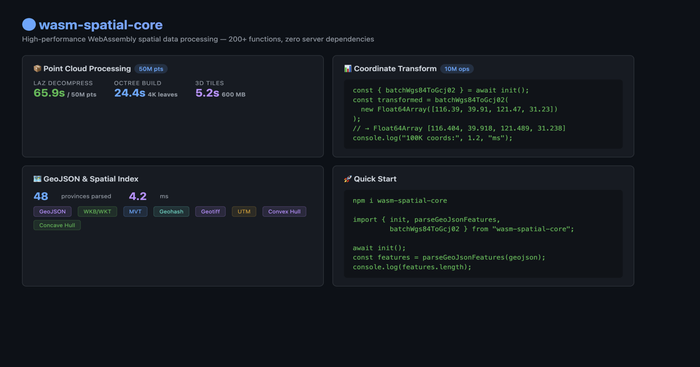

wasm-spatial-core
wasm-spatial-core
Drag a LAS/LAZ file into your browser → Cesium 3D. No server needed.



🌐 Live Demo · 📦 npm · 📖 API Docs · 🗺️ Roadmap · 🔭 Vision
🧪 Try it now:
<script type="module">
import init, { parsePointCloudAuto, buildOctree, generateTileset }
from 'https://esm.run/wasm-spatial-core';
await init();
// LAS/LAZ file → parse → octree → 3D Tiles — all in-browser
</script>
✨ What is this?
🚀 LAS/LAZ/COPC/E57/PLY/OBJ → 3D Tiles in the browser 🏔️ GeoTIFF → Quantized-Mesh Terrain in the browser 🗜️ Draco point cloud compression (Google draco3d integration) ⚡ 100M points in 8.5 seconds (release build, native) 🔒 Zero server, zero upload, zero dependencies
wasm-spatial-core is a high-performance WebAssembly engine that compiles spatial computing from Rust to run directly in the browser. Point cloud parsing, octree spatial partitioning, 3D Tiles generation, Draco compression, GeoTIFF terrain decoding, coordinate projection, GeoJSON processing — all at near-native speed.
🚀 Quick Start
npm install wasm-spatial-core
import init, {
parsePointCloudAuto,
buildOctree,
generateTileset,
} from 'wasm-spatial-core';
await init();
// Parse any point cloud (LAS, LAZ, COPC, PLY, OBJ...)
const cloud = parsePointCloudAuto(lasBytes);
// Build octree → 3D Tiles
const tiles = generateTileset(
cloud.positions(),
50000, // max points per node
10 // max depth
);
Draco Compression (optional)
npm install draco3d
import { loadSpatialCore, compressTilesetWithDraco } from 'wasm-spatial-core';
import { createEncoderModule } from 'draco3d';
const wasm = await loadSpatialCore();
const encoderModule = await createEncoderModule({});
const tileset = wasm.generateTileset(positions, 50000, 21);
const results = compressTilesetWithDraco(tileset, encoderModule, {
quantizationBits: 11,
onProgress: (i, total, orig, comp) => {
console.log(`Tile ${i + 1}/${total}: ${(comp / orig * 100).toFixed(0)}%`);
},
});
🎯 Core Pipelines
Point Cloud → 3D Tiles
LAS / LAZ / COPC / E57 / PLY / OBJ
│
▼
┌──────────────┐
│ WASM Parser │ Full format support, browser-side
└──────┬───────┘
▼
┌──────────────┐
│ Octree Build │ 8-way spatial partitioning
└──────┬───────┘
▼
┌──────────────┐
│ pnts Encoder │ 3D Tiles Point Cloud binary
└──────┬───────┘
▼
┌──────────────┐ ┌──────────────┐
│ tileset.json │ │ Draco Compress │ Optional (~20% ratio)
└──────┬───────┘ └──────┬───────┘
│ │
▼ ▼
Cesium / Three.js — interactive 3D
GeoTIFF → Terrain Tiles
GeoTIFF (.tif)
│
▼
┌──────────────┐
│ WASM Parser │ Float32/16/8, strip/tile, DEFLATE
└──────┬───────┘
▼
┌──────────────┐
│ Quantized-Mesh │ Cesium terrain binary format
└──────┬───────┘
▼
┌──────────────┐
│ tileset.json │ LOD pyramid (zoom 0..N)
└───────────────┘
⚡ Performance
Benchmarks on Apple M2 / Mac mini 4, see PERFORMANCE.md for details.
Point Cloud Pipeline (LAS → Octree → 3D Tiles)
| Dataset | Points | Parse | Octree | Tileset | Total |
|---|---|---|---|---|---|
| sample.las | 1,065 | — | < 1 ms | < 1 ms | — |
| Synthetic | 500K | 36 ms | 117 ms | 49 ms | 205 ms |
| Synthetic | 10M | 1.1 s | 2.9 s | 740 ms | 4.8 s |
| Synthetic | 100M | 0.4 s | 6.0 s | 0.8 s | 8.5 s |
100M-point benchmark: release build, single-thread native (Rust). WASM will be slower but still well under 30 seconds.
Draco Compression
| Dataset | Points | Uncompressed | Draco (q=11) | Ratio |
|---|---|---|---|---|
| Synthetic | 50K | 600 KB | 121 KB | 20.2% |
| Synthetic | 50K | 600 KB | 38 KB (q=8) | 6.3% |
Encoder WASM: 362 KB (Google draco3d, Apache-2.0). Point order may differ after encoding, but position-color pairing is preserved.
Coordinate Conversion (vs Pure JS)
| Operation | Pure JS | WASM | Speedup |
|---|---|---|---|
| WGS84 → GCJ-02 | ~1,200 ms | ~45 ms | ~27× |
| WGS84 → Mercator | ~800 ms | ~12 ms | ~67× |
📦 Format Support
Point Cloud
| Format | Read | Feature Flag |
|---|---|---|
| LAS (1.2–1.4, Format 0–6) | ✅ | point-cloud |
| LAZ (compressed) | ✅ | laz-support |
| COPC (Cloud Optimized) | ✅ | laz-support |
| PLY (ASCII + binary) | ✅ | point-cloud |
| OBJ | ✅ | point-cloud |
| PCD (ASCII + binary) | ✅ | point-cloud |
| E57 | ✅ | e57-support |
Vector & Geometry
| Format | Read | Write |
|---|---|---|
| GeoJSON | ✅ | ✅ |
| MVT (Vector Tiles) | ✅ | ✅ |
| WKT / WKB | ✅ | ✅ |
| GeoTIFF (Terrain) | ✅ | — |
| glTF 2.0 / GLB | — | ✅ |
| 3D Tiles (pnts) | — | ✅ |
| 3D Tiles (b3dm) | — | ✅ |
| 3D Tiles (quantized-mesh) | — | ✅ |
Coordinate Systems
| System | Direction |
|---|---|
| WGS-84 ↔ GCJ-02 / BD-09 | ✅ |
| WGS-84 ↔ Web Mercator (EPSG:3857) | ✅ |
| WGS-84 ↔ CGCS2000 | ✅ |
| WGS-84 ↔ UTM | ✅ |
Spatial Analysis
R-Tree / Octree indexing, bounding box / KNN queries, haversine / vincenty distance, polygon boolean ops, Douglas-Peucker simplification, convex / concave hull, DBSCAN / grid clustering, TIN interpolation, and more.
📸 Demos
| Demo | URL |
|---|---|
| 🏠 Landing Page | https://reed-soul.github.io/wasm-spatial-core/ |
| Point Cloud (LAS/LAZ/PLY/OBJ/E57) | https://reed-soul.github.io/wasm-spatial-core/point-cloud/ |
| Cesium 3D Tiles | https://reed-soul.github.io/wasm-spatial-core/cesium-workflow/ |
| Terrain Viewer (GeoTIFF) | https://reed-soul.github.io/wasm-spatial-core/terrain/ |
Run locally: npm run demo
📖 API Reference
Point Cloud → 3D Tiles
import { loadSpatialCore } from 'wasm-spatial-core';
const wasm = await loadSpatialCore();
// Auto-detect format
const cloud = wasm.parsePointCloudAuto(bytes);
console.log(cloud.count()); // point count
console.log(cloud.positions()); // Float32Array [x,y,z,...]
console.log(cloud.colors()); // Uint8Array [r,g,b,...] | null
// Octree
const octree = wasm.buildOctree(cloud.positions(), 50000, 10);
console.log(octree.nodeCount()); // node count
console.log(octree.depth()); // tree depth
// 3D Tiles tileset
const tileset = wasm.generateTileset(cloud.positions(), 50000, 10);
console.log(tileset.tileCount()); // tile count
console.log(tileset.tilesetJson()); // tileset.json string
Draco Compression
import { compressTilesetWithDraco, buildDracoTileset } from 'wasm-spatial-core';
import { createEncoderModule } from 'draco3d';
const encoderModule = await createEncoderModule({});
// Compress all tiles
const results = compressTilesetWithDraco(tileset, encoderModule, {
quantizationBits: 11, // 8–18, default 11
encodeSpeed: 5, // 0–10, default 5
decodeSpeed: 5, // 0–10, default 5
compressColors: false, // also compress RGB (default false)
});
// Or build a complete compressed tileset
const { tiles, totalCompressedSize, compressionRatio } =
buildDracoTileset(tileset, encoderModule);
Coordinate Conversion
const coords = new Float64Array([116.404, 39.915, 121.474, 31.230]);
const gcj02 = wasm.batchWgs84ToGcj02(coords); // batch transform
wasm.batchWgs84ToGcj02InPlace(mutable); // zero-copy in-place
const [zone, easting, northing] = wasm.wgs84ToUtm(116.404, 39.915);
GeoJSON
wasm.parseGeoJsonStream(hugeGeojson, 65536, (chunk, n, total) => { /* ... */ });
const iter = wasm.parseGeoJsonLazy(hugeGeojson); // O(single feature) memory
🛠️ Build from Source
git clone https://github.com/reed-soul/wasm-spatial-core.git
cd wasm-spatial-core
# Point cloud + GeoTIFF
wasm-pack build --target web --release --out-dir pkg -- --features point-cloud,geotiff
# Run demos
npm run demo
Feature Flags
| Feature | Default | Description |
|---|---|---|
single-thread |
✅ | Zero-config, works everywhere |
multi-thread |
❌ | Web Workers + SharedArrayBuffer |
point-cloud |
❌ | LAS/LAZ/COPC/PLY/OBJ + octree + 3D Tiles |
laz-support |
❌ | LAZ/COPC decompression |
e57-support |
❌ | E57 format |
geotiff |
❌ | GeoTIFF terrain + quantized-mesh |
draco-support |
❌ | Draco compression API (JS-side via draco3d) |
📋 Roadmap
| Doc | Scope |
|---|---|
| VISION.md | Product vision — next-gen Web3D spatial engine (latest Chrome, WASM + WebGPU) |
| ROADMAP_V2.md | Active plan — Waves 1–5 (live twin, IR, terrain edit, GPU, mesh edit) |
| ROADMAP_V1.md | ✅ Completed — point cloud → 3D Tiles browser pipeline |
V1 highlights (done): LAS/LAZ → octree → 3D Tiles · GeoTIFF terrain · Draco · multi-thread WASM · Node.js batch API
V2 next: instance/trajectory twins · spatial IR · terrain deform · WebGPU compute · mesh clip/QEM — see issue templates
🤝 Contributing
See CONTRIBUTING.md.
📄 License
MIT License — © 2026 Zhiqi Weilai
Built with 🦀 Rust + 🕸️ WebAssembly
Native spatial computing in every browser.